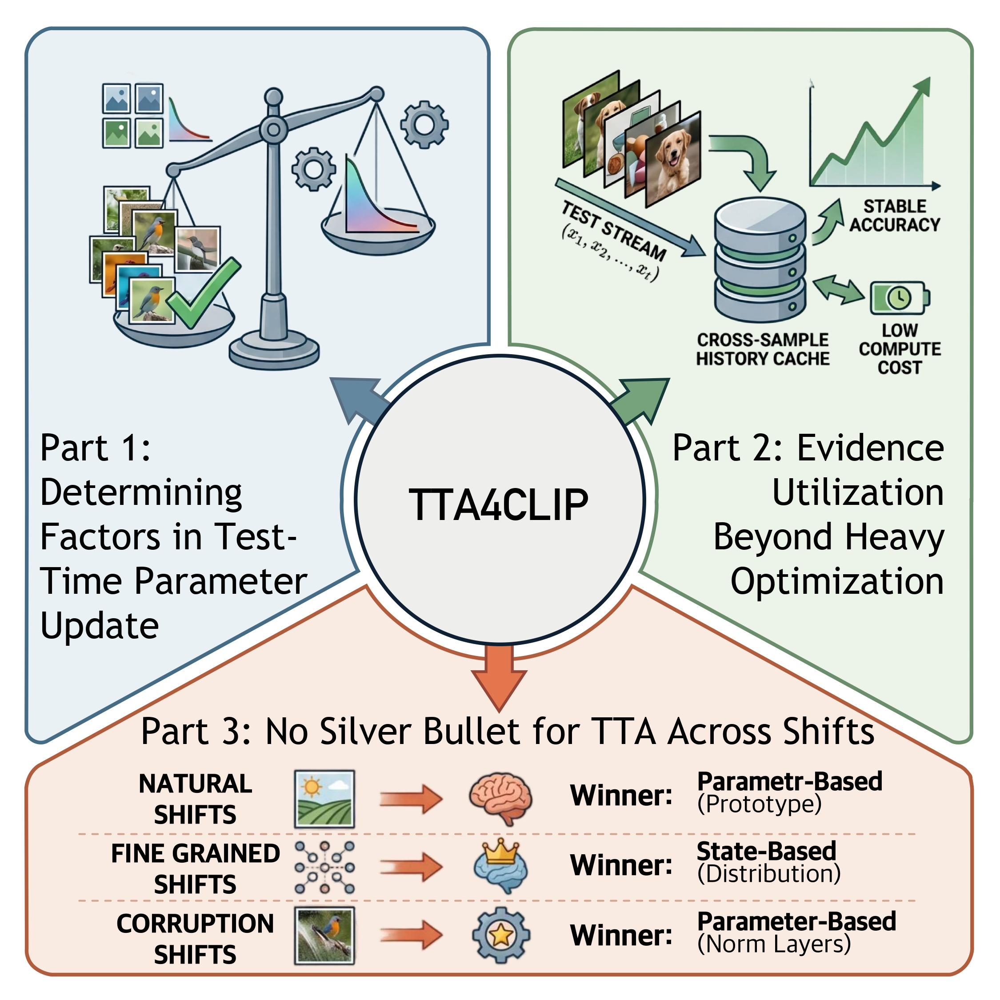
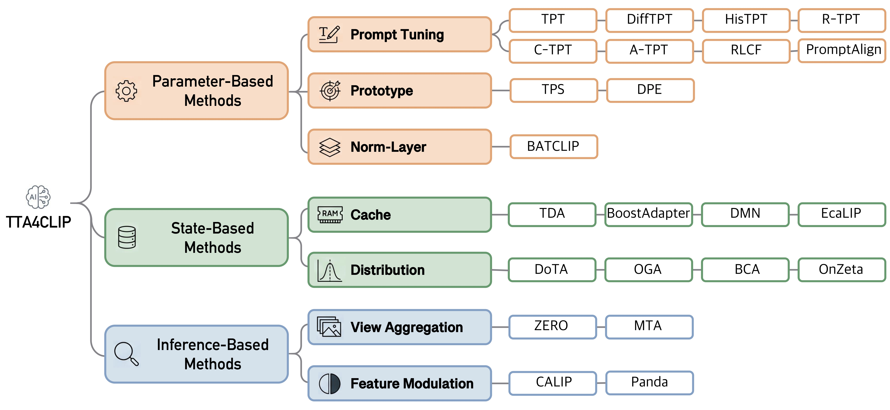

Stepping back from SOTA chasing
Vision-Language Models such as CLIP are a standard backbone for open-vocabulary recognition, yet their zero-shot predictions remain vulnerable to distribution shifts at deployment. Test-Time Adaptation (TTA) has recently been extended to CLIP as a lightweight solution, leading to a rapidly growing body of TTA4CLIP methods.
However, empirical progress has outpaced our understanding of what truly drives adaptation, where the gains originate, and under which shifts they remain reliable. We take a step back from the pursuit of state-of-the-art accuracy and conduct a systematic controlled study of TTA4CLIP.
We organize existing methods into three unified paradigms by what is updated at test time, and introduce TTABC, an open-source TTA Benchmark for CLIP that standardizes evaluation protocols and integrates 20+ representative methods.

Three paradigms by test-time update target
Despite diverse implementations, all existing TTA4CLIP methods can be organized by what is updated at test time.
Parameter-based
Adapt model parameters (prompts, norm layers, prototype residuals) via gradient-based optimization.
State-based
Keep parameters frozen; update an external state by accumulating historical evidence from the test stream.
Inference-based
Update neither parameters nor state; refine predictions directly using current evidence in the forward pass.

What the controlled study reveals
Determining factors in test-time parameter update
Heavy parameter optimization yields limited and diminishing returns. Instead, adaptation gains are primarily driven by the test-time evidence (quantity & quality of augmented views) and reliable proxies — the exact proxy form is secondary as long as it aligns with predictive correctness (entropy & MSP correlate with batch accuracy at r = −0.929 / 0.916).
Evidence utilization beyond heavy optimization
Competitive and efficient performance can be achieved without heavy back-propagation — through prediction refinement from cross-/current-sample evidence or lightweight prototype residual updates. TPS updates only a K×d residual matrix, uses just 1.30 GiB memory vs. TPT's 3.80 GiB / BATCLIP's 8.54 GiB, yet leads on natural shifts.
No silver bullet for TTA across shifts
No single adaptation paradigm is universally optimal. The preferred paradigm depends on the nature of the shift: prototype/inference methods for natural shifts, state-based methods for fine-grained shifts, norm-layer adaptation for corruptions, and stream-aware designs for label shifts.
Which paradigm wins on which shift?
Accuracy (%) for CLIP ViT-B/16. Best per column in bold. Winners differ across shift types — the core evidence for “no silver bullet”.
Natural & Corruption Shifts — representative methods
| Paradigm | Method | INet | I-V2 | I-A | I-R | I-S | Nat. Avg. | Corr. Avg. |
|---|---|---|---|---|---|---|---|---|
| — | Zero-Shot CLIP | 66.72 | 60.86 | 47.87 | 73.98 | 46.08 | 57.20 | 21.46 |
| Parameter | TPT | 68.85 | 63.06 | 52.12 | 76.52 | 47.94 | 59.91 | 25.55 |
| TPS | 70.29 | 64.01 | 58.44 | 79.30 | 50.28 | 63.01 | 27.43 | |
| DPE | 70.20 | 63.61 | 56.92 | 77.66 | 50.79 | 62.25 | 27.74 | |
| BATCLIP | 66.92 | 60.94 | 48.57 | 75.99 | 44.33 | 57.46 | 30.91 | |
| State | ECALP | 70.18 | 62.27 | 49.12 | 77.69 | 51.74 | 60.21 | 29.76 |
| DoTA | 70.70 | 63.74 | 58.43 | 77.66 | 50.27 | 62.53 | 25.81 | |
| OnZeta | 71.12 | 63.34 | 48.55 | 75.48 | 52.06 | 59.86 | 29.38 | |
| Inference | ZERO | 68.94 | 63.26 | 56.08 | 76.67 | 47.72 | 60.93 | 22.95 |
| MTA | 69.02 | 63.17 | 54.65 | 76.88 | 48.36 | 60.77 | 25.42 |
Norm-layer adaptation specializes in corruptions
| Method | Natural Avg. | Fine-Grained Avg. | Corruption Avg. |
|---|---|---|---|
| Zero-Shot CLIP | 57.20 | 63.76 | 21.46 |
| TPS | 63.01 | 65.17 | 27.43 |
| OnZeta | 59.86 | 69.39 | 29.38 |
| SAR | 57.47 | 63.93 | 31.62 |
| DeYO | 57.86 | 64.33 | 34.98 |
Memory footprint: Zero-shot 0.75 GiB · TPS 0.94 · TPT 3.80 · BATCLIP 8.54 GiB. DiffTPT costs ~21 s/sample (~44 h on full I-A) vs. TPS ~0.21 s/sample.
An extensible evaluation platform
A single shared codebase implementing 20+ methods across all three paradigms, with standardized protocols and datasets.
Natural Distribution Shifts
ImageNet-V2, ImageNet-A, ImageNet-R, ImageNet-Sketch
Fine-Grained Classification
Caltech101, OxfordPets, StanfordCars, Flowers102, Food101, Aircraft, SUN397, DTD, EuroSAT, UCF101
Image Corruptions
ImageNet-C (15 corruption types × 5 severity levels)
Label Shifts
Dirichlet-based temporally correlated streams, overlaid on any shift type
TTABC/ ├── clip/ CLIP backbones & encoders ├── data/ dataset loaders & splits ├── ttabc/ │ ├── model_selection/ # 30+ method implementations │ │ ├── tpt.py tps.py dpe.py difftpt.py │ │ ├── tda.py dota.py oga.py onzeta.py bca.py │ │ ├── zero.py mta.py calip.py panda.py ... │ │ └── base_method.py # BaseMethod interface │ ├── configs/ │ └── utils/ ├── main.py # entry point ├── test_ds_example.sh # natural/corruption shifts └── test_fg_example.sh # fine-grained shifts
Run experiments in minutes
Installation
# Clone the repository git clone https://github.com/walawalagoose/TTABC.git cd TTABC # Create a conda environment conda create -n ttabc python=3.10 -y conda activate ttabc # Install PyTorch (match your CUDA) pip3 install torch torchvision torchaudio \ --index-url https://download.pytorch.org/whl/cu128 pip install -r requirements.txt
Running Experiments
# Set {data_root}; pick arch RN50 or ViT-B/16 # select a method via {run_type}: tpt, tps, tda ... # Test on ImageNet-R bash ./test_ds_example.sh R # ImageNet / -A / -V2 / -R / -Sketch bash ./test_ds_example.sh I/A/V/R/K # Fine-grained datasets bash ./test_fg_example.sh DTD/Flower102/Food101/...
Adding a new method
- Create ttabc/model_selection/newMethod.py with a class inheriting BaseMethod, implementing test_time_tuning and test_time_adapt_eval.
- Register the key in ttabc/model_selection/__init__.py.
- Add a --run_type choice in main.py and wire it in main_worker.
Send a PR to add your algorithm!
Cite our work
@article{huang2026drives,
title = {What Drives Test-Time Adaptation for CLIP?
A Controlled Empirical Study from an Update Perspective},
author = {Huang, Jiazhen and Chen, Xiao and Liu, Zhiming and
Sun, Yaru and Jiang, Jingyan and Wang, Zhi},
journal = {arXiv preprint arXiv:2606.14299},
year = {2026}
}
Acknowledgement
We thank the authors of CoOp/CoCoOp and TPT for their open-source contributions and data-preparation help, and the authors of TTAB for inspiration.